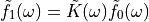

Note
Go to the end to download the full example code.
Image denoising by FFT¶
Denoise an image (../../../../data/moonlanding.png) by
implementing a blur with an FFT.
{kind=link}
Implements, via FFT, the following convolution:


Read and plot the image¶
import numpy as np
import matplotlib.pyplot as plt
im = plt.imread("../../../../data/moonlanding.png").astype(float)
plt.figure()
plt.imshow(im, "gray")
plt.title("Original image")
Compute the 2d FFT of the input image¶
import scipy as sp
im_fft = sp.fft.fft2(im)
# Show the results
def plot_spectrum(im_fft):
from matplotlib.colors import LogNorm
# A logarithmic colormap
plt.imshow(np.abs(im_fft), norm=LogNorm(vmin=5))
plt.colorbar()
plt.figure()
plot_spectrum(im_fft)
plt.title("Fourier transform")
Filter in FFT¶
# In the lines following, we'll make a copy of the original spectrum and
# truncate coefficients.
# Define the fraction of coefficients (in each direction) we keep
keep_fraction = 0.1
# Call ff a copy of the original transform. NumPy arrays have a copy
# method for this purpose.
im_fft2 = im_fft.copy()
# Set r and c to be the number of rows and columns of the array.
r, c = im_fft2.shape
# Set to zero all rows with indices between r*keep_fraction and
# r*(1-keep_fraction):
im_fft2[int(r * keep_fraction) : int(r * (1 - keep_fraction))] = 0
# Similarly with the columns:
im_fft2[:, int(c * keep_fraction) : int(c * (1 - keep_fraction))] = 0
plt.figure()
plot_spectrum(im_fft2)
plt.title("Filtered Spectrum")
Reconstruct the final image¶
# Reconstruct the denoised image from the filtered spectrum, keep only the
# real part for display.
im_new = sp.fft.ifft2(im_fft2).real
plt.figure()
plt.imshow(im_new, "gray")
plt.title("Reconstructed Image")
Easier and better: scipy.ndimage.gaussian_filter()¶
Implementing filtering directly with FFTs is tricky and time consuming. We can use the Gaussian filter from
scipy.ndimage
im_blur = sp.ndimage.gaussian_filter(im, 4)
plt.figure()
plt.imshow(im_blur, "gray")
plt.title("Blurred image")
plt.show()